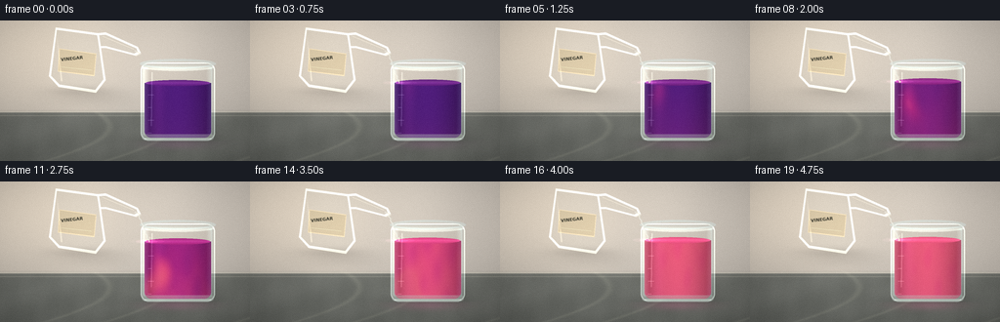
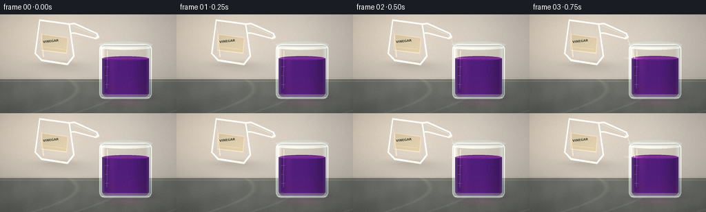
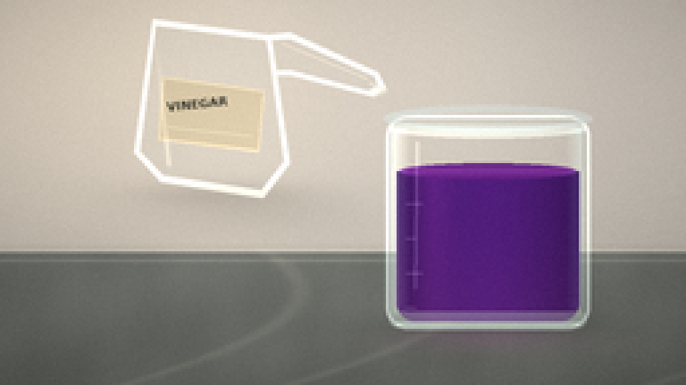
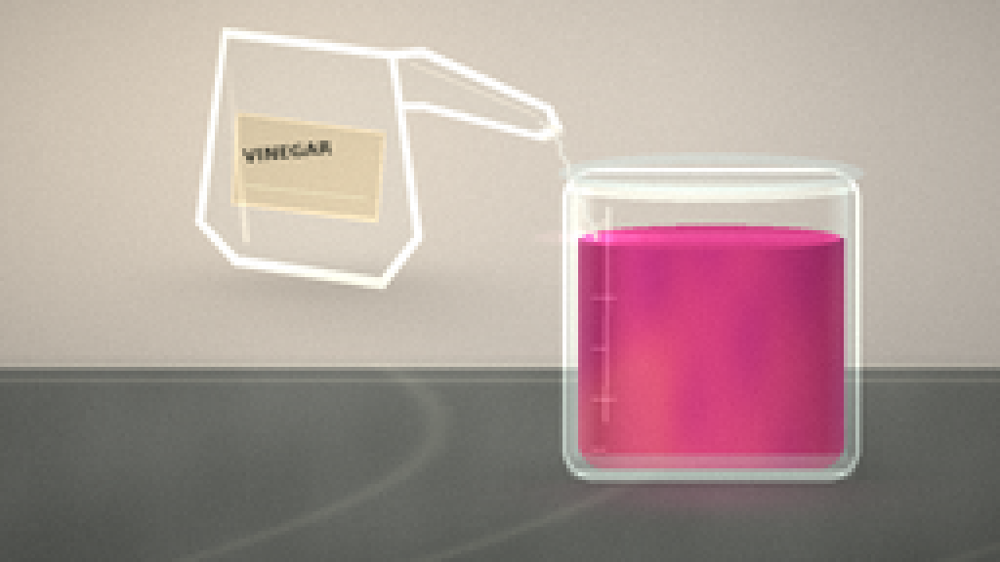
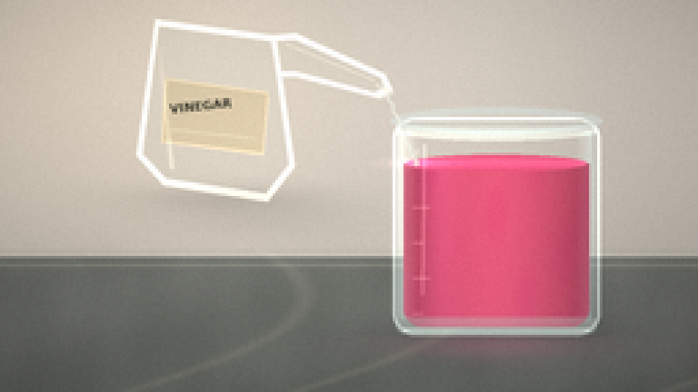
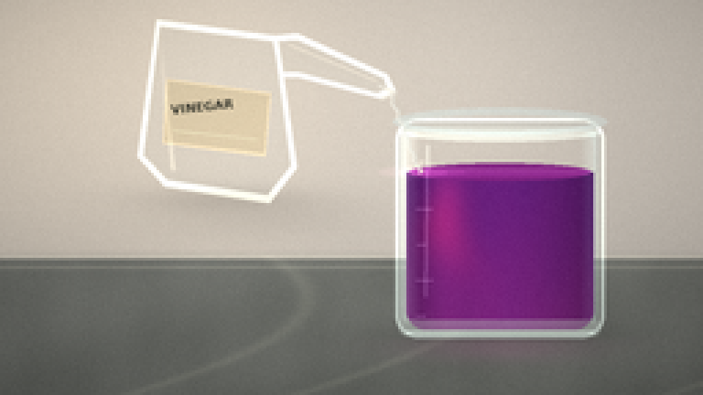

CODING AGENTS AS PIXEL WORLD MODELS
traex/DeepSeek-V4.1-Flash · phygen_146
点击播放 · 原生 RGB 像素
逐轮保存的候选
回放视频、检查图与代码变化。
每份候选均可单独播放。实际图片检查记录在下方工具轨迹中。
候选 01播放与检查图
点击播放 · 原生 RGB 像素


展开代码变化
--- 上一保存版本
+++ 本次保存版本
@@ -0,0 +1,441 @@
+from pathlib import Path
+
+import numpy as np
+from PIL import Image, ImageDraw, ImageFilter, ImageFont
+from scipy.ndimage import gaussian_filter
+
+import artifact_io
+
+
+W, H, N, FPS = 256, 144, 20, 4
+S = 4
+RW, RH = W * S, H * S
+CASE = Path(__file__).resolve().parent
+
+
+def smoothstep(a, b, x):
+ t = np.clip((x - a) / (b - a), 0.0, 1.0)
+ return t * t * (3.0 - 2.0 * t)
+
+
+def ss(value):
+ return int(round(value * S))
+
+
+def canvas_mask(draw_fn, blur=0.0):
+ image = Image.new("L", (RW, RH), 0)
+ draw_fn(ImageDraw.Draw(image))
+ if blur:
+ image = image.filter(ImageFilter.GaussianBlur(blur * S))
+ return np.asarray(image, dtype=np.float32) / 255.0
+
+
+def polygon_mask(points, blur=0.0):
+ return canvas_mask(
+ lambda d: d.polygon([(ss(x), ss(y)) for x, y in points], fill=255),
+ blur,
+ )
+
+
+def ellipse_mask(box, blur=0.0):
+ return canvas_mask(
+ lambda d: d.ellipse(tuple(ss(v) for v in box), fill=255),
+ blur,
+ )
+
+
+def line_mask(points, width=1.0, blur=0.0):
+ pts = [(ss(x), ss(y)) for x, y in points]
+ return canvas_mask(
+ lambda d: d.line(pts, fill=255, width=max(1, ss(width)), joint="curve"),
+ blur,
+ )
+
+
+def rounded_mask(box, radius, blur=0.0):
+ return canvas_mask(
+ lambda d: d.rounded_rectangle(
+ tuple(ss(v) for v in box), radius=ss(radius), fill=255
+ ),
+ blur,
+ )
+
+
+def over(image, color, alpha):
+ color = np.asarray(color, dtype=np.float32)
+ alpha = np.clip(alpha, 0.0, 1.0)[..., None]
+ return image * (1.0 - alpha) + color * alpha
+
+
+def gradient_v(top, bottom):
+ t = np.linspace(0.0, 1.0, RH, dtype=np.float32)[:, None, None]
+ column = np.asarray(top, np.float32) * (1.0 - t) + np.asarray(bottom, np.float32) * t
+ return np.repeat(column, RW, axis=1)
+
+
+def rgba_text(text, font_size, color, angle=0.0):
+ font = ImageFont.truetype("/usr/share/fonts/truetype/dejavu/DejaVuSans-Bold.ttf", font_size)
+ box = font.getbbox(text)
+ image = Image.new("RGBA", (box[2] - box[0] + 8, box[3] - box[1] + 8), (0, 0, 0, 0))
+ draw = ImageDraw.Draw(image)
+ draw.text((4 - box[0], 4 - box[1]), text, font=font, fill=color)
+ if angle:
+ image = image.rotate(angle, resample=Image.Resampling.BICUBIC, expand=True)
+ return image
+
+
+def paste_rgba(image, patch, x, y):
+ arr = np.asarray(patch, dtype=np.float32)
+ alpha = arr[..., 3:4] / 255.0
+ color = arr[..., :3]
+ x, y = int(x), int(y)
+ h, w = alpha.shape[:2]
+ x0, y0 = max(0, x), max(0, y)
+ x1, y1 = min(image.shape[1], x + w), min(image.shape[0], y + h)
+ if x1 <= x0 or y1 <= y0:
+ return
+ src = (slice(y0 - y, y1 - y), slice(x0 - x, x1 - x))
+ dst = (slice(y0, y1), slice(x0, x1))
+ a = alpha[src]
+ image[dst] = image[dst] * (1.0 - a) + color[src] * a
+
+
+def liquid_color(concentration, v, u):
+ concentration = np.clip(concentration, 0.0, 1.0)
+ purple = np.array([78, 29, 126], dtype=np.float32)
+ magenta = np.array([164, 38, 129], dtype=np.float32)
+ pink = np.array([231, 92, 126], dtype=np.float32)
+
+ first = concentration / 0.58
+ second = (concentration - 0.58) / 0.42
+ color = (
+ purple[None, None, :] * (1.0 - first[..., None])
+ + magenta[None, None, :] * first[..., None]
+ )
+ color = (
+ color * (1.0 - np.clip(second, 0.0, 1.0)[..., None])
+ + pink[None, None, :] * np.clip(second, 0.0, 1.0)[..., None]
+ )
+
+ # Curved glass darkens the liquid at the sides and deepens it near the base.
+ side = np.clip(np.abs(u), 0.0, 1.0)
+ color *= (0.70 + 0.27 * (1.0 - side**1.8) + 0.06 * (1.0 - v))[..., None]
+ color += np.array([16, 7, 13], dtype=np.float32) * (v[..., None] ** 2)
+ return color
+
+
+def make_background(frame):
+ yy, xx = np.mgrid[0:RH, 0:RW].astype(np.float32)
+ xn = xx / RW
+ yn = yy / RH
+
+ image = gradient_v((220, 216, 207), (188, 185, 179))
+ glow = np.exp(-(((xn - 0.12) / 0.38) ** 2 + ((yn - 0.15) / 0.55) ** 2))
+ image += glow[..., None] * np.array([22, 18, 11], np.float32)
+
+ # Broad, soft window-light stripes keep the wall quiet but dimensional.
+ stripe = 0.5 + 0.5 * np.cos((xn * 5.5 + 0.2) * np.pi)
+ image += (stripe * 3.5)[..., None] * np.array([1.0, 0.95, 0.82], np.float32)
+ image -= (yn[..., None] ** 1.7) * np.array([11, 10, 10], np.float32)
+
+ # Countertop and its lit front edge.
+ counter = smoothstep(91.0 * S, 96.0 * S, yy)
+ counter_color = gradient_v((128, 132, 128), (103, 108, 104))
+ grain = (
+ 2.6 * np.sin(xx * 0.013 + yy * 0.041)
+ + 1.7 * np.sin(xx * 0.031 - yy * 0.019)
+ + 0.9 * np.cos(xx * 0.077 + yy * 0.011)
+ )
+ counter_color = counter_color + grain[..., None]
+ image = image * (1.0 - counter[..., None]) + counter_color * counter[..., None]
+ edge = np.exp(-((yy - 93.4 * S) / (0.7 * S)) ** 2)
+ image += edge[..., None] * np.array([50, 48, 43], np.float32)
+ front = np.exp(-((yy - 97.3 * S) / (0.65 * S)) ** 2)
+ image += front[..., None] * np.array([23, 22, 19], np.float32)
+
+ # Very subtle marble veins in the bench.
+ vein = np.sin(xx * 0.008 + 3.0 * np.sin(yy * 0.009 + 0.8))
+ vein = np.exp(-((vein - 0.55) / 0.10) ** 2) * counter
+ image += vein[..., None] * np.array([12, 12, 10], np.float32)
+
+ # Soft ambient shadows beneath the glassware.
+ shadow = (
+ np.exp(-(((xx - 178 * S) / (48 * S)) ** 2 + ((yy - 123 * S) / (6.5 * S)) ** 2))
+ * 0.25
+ )
+ shadow += (
+ np.exp(-(((xx - 92 * S) / (38 * S)) ** 2 + ((yy - 79 * S) / (8 * S)) ** 2))
+ * 0.13
+ )
+ image *= (1.0 - shadow[..., None] * 0.55)
+ return image
+
+
+def make_liquid(frame, image):
+ p = frame / (N - 1)
+ surface = 64.0 - 4.2 * smoothstep(0.0, 1.0, p)
+ inner = rounded_mask((148.0, 47.0, 216.0, 120.0), 7.0)
+ liquid_region = inner * (np.arange(RH, dtype=np.float32)[:, None] >= surface * S)
+
+ yy, xx = np.mgrid[0:RH, 0:RW].astype(np.float32) / S
+ u = (xx - 182.0) / 33.0
+ v = np.clip((yy - surface) / (120.0 - surface), 0.0, 1.0)
+
+ mix = smoothstep(0.08, 0.98, p)
+ delay = 0.12 * (1.0 - v) * np.sin(np.pi * np.clip(p, 0.0, 1.0))
+ concentration = np.clip(1.10 * (mix - delay), 0.0, 1.0)
+
+ # An acid-rich plume travels from the pour point down through the solution.
+ front = np.clip((p - 0.15) / 0.68, 0.0, 1.0)
+ center = -0.58 + 0.17 * np.sin(v * 7.0 + p * 8.0) * v
+ width = 0.18 + 0.23 * v
+ plume = np.exp(-((u - center) / width) ** 2) * np.exp(
+ -((v - front) / (0.24 + 0.15 * p)) ** 2
+ )
+ plume *= smoothstep(0.10, 0.34, p) * (1.0 - 0.38 * smoothstep(0.75, 1.0, p))
+
+ wisps = (
+ 0.50 * np.sin(5.7 * u + 8.0 * v - 10.0 * p)
+ + 0.34 * np.sin(10.5 * u - 6.5 * v + 7.0 * p)
+ + 0.22 * np.cos(15.0 * u + 4.0 * v - 5.0 * p)
+ )
+ wisps *= 0.06 * mix * smoothstep(0.10, 0.45, p)
+ concentration = np.clip(concentration + 0.34 * plume + wisps, 0.0, 1.0)
+
+ color = liquid_color(concentration, v, u)
+ highlight = np.exp(-((u + 0.62) / 0.20) ** 2) * (1.0 - 0.55 * v)
+ color += highlight[..., None] * np.array([21, 8, 19], np.float32)
+
+ image[:] = image * (1.0 - liquid_region[..., None]) + color * liquid_region[..., None]
+
+ # Liquid meniscus and elliptical top surface.
+ surf = ellipse_mask((149.0, surface - 3.1, 215.0, surface + 3.1))
+ surf_color = liquid_color(np.array(0.88 * mix + 0.08), np.array(0.0), np.array(-0.15))
+ image[:] = image * (1.0 - surf[..., None] * 0.96) + surf_color * (surf[..., None] * 0.96)
+ top_line = ellipse_mask((149.0, surface - 3.1, 215.0, surface + 3.1), 0.15)
+ top_line = top_line * np.clip(
+ 1.0 - np.abs((yy - surface) / 2.9), 0.0, 1.0
+ )
+ image += top_line[..., None] * np.array([34, 17, 32], np.float32)
+
+ # Concentric ripples where the stream meets the surface.
+ amount = smoothstep(0.03, 0.18, p)
+ for k in range(3):
+ phase = (p * 4.4 + k / 3.0) % 1.0
+ rx = 4.0 + 19.0 * phase
+ ry = 0.6 + 2.4 * phase
+ ring = ellipse_mask((153.5 - rx, surface - ry, 153.5 + rx, surface + ry), 0.10)
+ ring *= np.clip((1.0 - phase) * 0.55, 0.0, 0.55) * amount
+ image += ring[..., None] * np.array([55, 31, 45], np.float32)
+
+ # Small bubbles make the reaction read as an active liquid rather than a color wipe.
+ bubble_alpha = np.zeros((RH, RW), dtype=np.float32)
+ bubble_glint = np.zeros((RH, RW), dtype=np.float32)
+ for i in range(9):
+ speed = 0.35 + 0.08 * i
+ cycle = (p * 1.7 * speed + i * 0.137) % 1.0
+ bx = 160.0 + 29.0 * ((i * 0.371 + 0.18 * np.sin(frame * 0.9 + i)) % 1.0)
+ by = 115.0 - cycle * (51.0 - 6.0 * (i % 3))
+ br = 0.55 + 0.22 * (i % 3)
+ ring = ellipse_mask((bx - br, by - br, bx + br, by + br), 0.08)
+ core = ellipse_mask((bx - br * 0.58, by - br * 0.58, bx + br * 0.58, by + br * 0.58), 0.07)
+ bubble_alpha = np.maximum(bubble_alpha, ring * 0.55 * amount)
+ bubble_glint += core * 0.34
+ image = over(image, (239, 188, 207), bubble_alpha)
+ image += bubble_glint[..., None] * np.array([45, 21, 31], np.float32)
+ return surface, amount, mix
+
+
+def make_beaker(image, surface, amount, mix):
+ body = rounded_mask((144.0, 43.0, 220.0, 123.0), 8.0)
+ inner = rounded_mask((148.0, 47.0, 216.0, 120.0), 7.0)
+ shell = np.clip(body - inner, 0.0, 1.0)
+ image = over(image, (207, 221, 218), shell * 0.28)
+
+ # Broad transparent reflections and crisp glass edges.
+ left_glass = canvas_mask(
+ lambda d: d.rectangle((ss(146), ss(48), ss(153), ss(117)), fill=255), 0.5
+ )
+ left_glass *= np.clip((153 - np.arange(RW)[None, :] / S) / 7.0, 0.0, 1.0)
+ image += left_glass[..., None] * np.array([49, 56, 55], np.float32)
+ right_glass = canvas_mask(
+ lambda d: d.rectangle((ss(211), ss(48), ss(217), ss(117)), fill=255), 0.45
+ )
+ right_glass *= np.clip((np.arange(RW)[None, :] / S - 211) / 6.0, 0.0, 1.0)
+ image += right_glass[..., None] * np.array([20, 30, 31], np.float32)
+
+ outline = rounded_mask((144.0, 43.0, 220.0, 123.0), 8.0, 0.13)
+ outline -= rounded_mask((145.25, 44.25, 218.75, 121.75), 7.1, 0.13)
+ image += np.clip(outline, 0.0, 1.0)[..., None] * np.array([62, 72, 70], np.float32)
+
+ # Elliptical rim, with a brighter front arc.
+ rim_outer = ellipse_mask((143.0, 39.2, 221.0, 49.2), 0.10)
+ rim_inner = ellipse_mask((149.0, 42.0, 215.0, 47.2), 0.10)
+ rim = np.clip(rim_outer - rim_inner, 0.0, 1.0)
+ image = over(image, (218, 230, 227), rim * 0.74)
+ front_arc = ellipse_mask((144.4, 44.0, 219.6, 51.5), 0.18) * np.clip(
+ (np.arange(RH)[:, None] / S - 45.2) / 4.0, 0.0, 1.0
+ )
+ image += front_arc[..., None] * np.array([37, 46, 45], np.float32)
+
+ # Base is thicker glass with a little trapped light.
+ base = rounded_mask((145.2, 116.5, 218.8, 122.4), 5.5, 0.20)
+ image = over(image, (194, 209, 204), base * 0.38)
+ base_line = line_mask([(148, 121), (216, 121)], 0.85, 0.18)
+ image += base_line[..., None] * np.array([69, 80, 76], np.float32)
+
+ # Measurement ticks on the front-left side.
+ for i, y in enumerate((76, 89, 102, 115)):
+ length = 6 if i % 2 == 0 else 3.5
+ tick = line_mask([(151.5, y), (151.5 + length, y)], 0.52, 0.06)
+ image += tick[..., None] * np.array([48, 54, 53], np.float32)
+
+ # Narrow, moving specular streak.
+ streak = canvas_mask(
+ lambda d: d.line(
+ [(ss(155.5), ss(53)), (ss(154.8), ss(108))],
+ fill=255,
+ width=ss(1.05),
+ ),
+ 0.24,
+ )
+ image += streak[..., None] * np.array([34, 39, 38], np.float32)
+
+ # Reflection of the colored solution on the counter.
+ yy, xx = np.mgrid[0:RH, 0:RW].astype(np.float32) / S
+ reflection = np.exp(-((xx - 182.0) / 31.0) ** 2) * np.exp(
+ -((yy - 126.5) / 5.0) ** 2
+ )
+ reflection *= (yy > 123.0)
+ reflection_color = np.array([104 + 96 * mix, 34 + 22 * mix, 99 + 16 * mix], np.float32)
+ image += reflection[..., None] * reflection_color * 0.20
+ return image
+
+
+def make_stream(image, frame, surface, amount):
+ p = frame / (N - 1)
+ if amount <= 0.01:
+ return image
+
+ lip_x, lip_y = 142.0, 34.5
+ stream_pts = []
+ for y in np.linspace(lip_y, surface + 0.5, 36):
+ f = (y - lip_y) / max(surface + 0.5 - lip_y, 0.1)
+ x = lip_x + 11.0 * f + 0.45 * np.sin(y * 1.2 - frame * 1.35)
+ stream_pts.append((x, y))
+
+ core = line_mask(stream_pts, 0.82, 0.16) * amount
+ sheen = line_mask([(x - 0.42, y) for x, y in stream_pts], 0.25, 0.15) * amount
+ edge = line_mask(stream_pts, 1.35, 0.22) * amount
+ image = over(image, (220, 230, 224), edge * 0.22)
+ image = over(image, (232, 238, 232), core * 0.78)
+ image += sheen[..., None] * np.array([44, 39, 34], np.float32)
+
+ # Breakup and splashes near the contact point.
+ for i in range(6):
+ phase = (p * 5.2 + i * 0.167) % 1.0
+ x = 153.0 + (i - 2.5) * 2.2 * phase + 0.8 * np.sin(frame + i)
+ y = surface - 4.5 * np.sin(phase * np.pi) + (i % 2) * 0.6
+ r = 0.35 + 0.35 * (i % 3)
+ dot = ellipse_mask((x - r, y - r, x + r, y + r), 0.06) * (1.0 - phase)
+ image = over(image, (245, 241, 229), dot * 0.75 * amount)
+ return image
+
+
+def make_bottle(image, frame):
+ body_points = [(57, 7), (101, 13), (108, 61), (98, 74), (60, 68), (50, 57)]
+ body = polygon_mask(body_points)
+ image = over(image, (220, 224, 216), body * 0.18)
+
+ # Clear glass body edge and shoulder.
+ edge = polygon_mask(body_points, 0.15) - polygon_mask(
+ [(58.3, 9.5), (99.4, 15.0), (105.8, 60.2), (97.2, 71.0), (61.0, 65.4), (52.2, 56.4)],
+ 0.15,
+ )
+ edge = np.clip(edge, 0.0, 1.0)
+ image += edge[..., None] * np.array([74, 79, 73], np.float32)
+
+ # Glass neck and flared pouring lip.
+ neck_points = [(99, 13), (108, 12), (141, 27), (144, 33), (139, 36), (108, 28), (102, 28)]
+ neck = polygon_mask(neck_points)
+ image = over(image, (224, 226, 216), neck * 0.22)
+ neck_edge = polygon_mask(neck_points, 0.12) - polygon_mask(
+ [(101.0, 15.0), (108.0, 14.5), (139.5, 28.5), (140.7, 32.1), (137.2, 33.8), (108.0, 26.1), (103.0, 26.0)],
+ 0.12,
+ )
+ image += np.clip(neck_edge, 0.0, 1.0)[..., None] * np.array([72, 77, 70], np.float32)
+ lip = line_mask([(137.8, 31.0), (144.0, 34.0), (138.8, 36.1)], 1.35, 0.12)
+ image = over(image, (241, 242, 232), lip * 0.72)
+
+ # Label sits on the body, angled with the bottle.
+ label_points = [(60.5, 28.5), (98.5, 33.7), (96.6, 57.0), (59.2, 52.3)]
+ label = polygon_mask(label_points)
+ image = over(image, (224, 211, 178), label * 0.92)
+ label_shadow = line_mask([(61, 29.5), (99, 34.8)], 0.65, 0.20)
+ image -= label_shadow[..., None] * np.array([25, 22, 18], np.float32)
+ label_edge = polygon_mask(label_points, 0.08) - polygon_mask(
+ [(61.2, 29.8), (97.8, 34.8), (96.0, 55.8), (60.1, 51.4)], 0.08
+ )
+ image += np.clip(label_edge, 0.0, 1.0)[..., None] * np.array([33, 30, 24], np.float32)
+
+ text = rgba_text("VINEGAR", ss(4.4), (56, 57, 47, 255), angle=6.0)
+ paste_rgba(image, text, ss(61.0), ss(34.7))
+ subline = line_mask([(63.0, 47.5), (93.5, 50.7)], 0.30, 0.04)
+ image += subline[..., None] * np.array([56, 56, 45], np.float32)
+
+ # Long white highlights along the glass.
+ body_highlight = line_mask([(58.0, 14.0), (63.0, 62.0)], 1.15, 0.35)
+ body_highlight *= np.clip((np.arange(RH)[:, None] / S - 10.0) / 50.0, 0.0, 1.0)
+ image += body_highlight[..., None] * np.array([35, 35, 30], np.float32)
+ neck_highlight = line_mask([(105.0, 16.0), (137.0, 29.2)], 0.55, 0.18)
+ image += neck_highlight[..., None] * np.array([42, 41, 34], np.float32)
+
+ # Bottle shadow on the counter.
+ yy, xx = np.mgrid[0:RH, 0:RW].astype(np.float32) / S
+ shadow = np.exp(-((xx - 82.0) / 31.0) ** 2) * np.exp(
+ -((yy - 72.5) / 4.8) ** 2
+ )
+ image *= 1.0 - shadow[..., None] * 0.10
+ return image
+
+
+def finish(image, frame):
+ yy, xx = np.mgrid[0:RH, 0:RW].astype(np.float32)
+ xn = xx / RW
+ yn = yy / RH
+ vignette = np.clip(
+ 1.0 - 0.22 * (((xn - 0.5) / 0.62) ** 2 + ((yn - 0.48) / 0.68) ** 2), 0.74, 1.0
+ )
+ image *= vignette[..., None]
+
+ # A restrained, static warm/cool grade.
+ image[..., 0] *= 1.025
+ image[..., 2] *= 0.985
+ image = np.clip(image, 0, 255)
+ small = Image.fromarray(np.round(image).astype(np.uint8)).resize(
+ (W, H), Image.Resampling.LANCZOS
+ )
+ arr = np.asarray(small, dtype=np.float32)
+ rng = np.random.default_rng(1000 + frame)
+ grain = rng.normal(0.0, 1.25, (H, W, 1)).astype(np.float32)
+ arr += grain
+ return np.clip(np.round(arr), 0, 255).astype(np.uint8)
+
+
+def render_frame(frame):
+ image = make_background(frame)
+ surface, amount, mix = make_liquid(frame, image)
+ image = make_beaker(image, surface, amount, mix)
+ image = make_stream(image, frame, surface, amount)
+ image = make_bottle(image, frame)
+ return finish(image, frame)
+
+
+def main():
+ frames = np.stack([render_frame(i) for i in range(N)])
+ artifact_io.save(frames, CASE)
+ print(f"saved {frames.shape} RGB frames to {CASE}")
+
+
+if __name__ == "__main__":
+ main()
可观测工具轨迹
实际执行的命令与返回图片。
命令 1exit 0
/bin/bash -c "pwd && rg --files -g 'prompt.txt' -g 'GENERATION_RULES.md' -g 'task_spec.json' -g '"'!**/.git/**'"'"
命令 2exit 0
/bin/bash -c 'ls -la'
命令 3exit 0
/bin/bash -c 'cat prompt.txt'
命令 4exit 0
/bin/bash -c 'cat GENERATION_RULES.md'
命令 5exit 0
/bin/bash -c 'cat task_spec.json'
命令 6exit 0
/bin/bash -c "sed -n '1,240p' artifact_io.py"
命令 7exit 0
/bin/bash -c "sed -n '1,260p' player_template.html"
命令 8exit 0
/bin/bash -c "python - <<'PY'
import numpy, PIL
print('numpy', numpy.__version__)
print('PIL', PIL.__version__)
try:
import scipy; print('scipy', scipy.__version__)
except Exception as e: print('no scipy', e)
PY"命令 9exit 1
/bin/bash -c 'python generate.py'
命令 10exit 0
/bin/bash -c 'python generate.py'
命令 11exit 0
/bin/bash -c "python - <<'PY'
from PIL import Image
for i in (0, 7, 13, 19):
im=Image.open(f'frames/{i:02d}.png')
im.resize((1024,576),Image.Resampling.NEAREST).save(f'.tmp/frame_{i:02d}_4x.png')
PY"命令 12exit 0
/bin/bash -c "python - <<'PY'
from PIL import Image
import numpy as np
for i in [0,10,19]:
a=np.array(Image.open(f'frames/{i:02d}.png'))
print(i, a[90,182], a[80,170], a[110,200], a[90,160])
PY"命令 13exit 0
/bin/bash -c "nl -ba generate.py | sed -n '165,390p'"
命令 14exit 0
/bin/bash -c "python - <<'PY'
from pathlib import Path
import json
import numpy as np
from PIL import Image
spec=json.loads(Path('task_spec.json').read_text())
arr=np.load('pixels.npz')['pixels']
print('pixels.npz', arr.shape, arr.dtype)
print('frames dir', len(list(Path('frames').glob('*.png'))))
ims=np.stack([np.asarray(Image.open(p)) for p in sorted(Path('frames').glob('*.png'))])
print('png stack', ims.shape, ims.dtype)
print('changed pixels consecutive', [int((ims[i]"'!=ims[i-1]).any(axis=2).sum()) for i in range(1,len(ims))])
print('"'liquid means start/end', ims[0,65:118,155:213].mean((0,1)).round(1), ims[-1,65:118,155:213].mean((0,1)).round(1))
for name in ('index.html','inspection.png','transition_check.png'):
print(name, Path(name).stat().st_size)
PY"视觉工具实际返回图片 1

视觉工具实际返回图片 2

视觉工具实际返回图片 3

视觉工具实际返回图片 4

视觉工具实际返回图片 5

保存候选 1 份；完成命令 14 次；可验证图片返回 5 张。原始 API 响应与完整日志保留在本地。